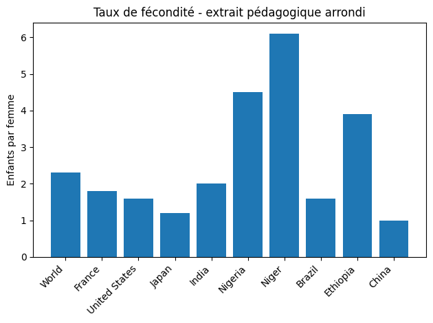
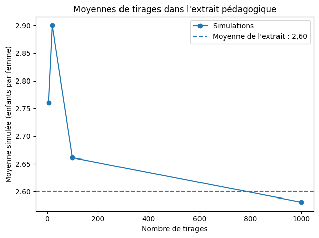
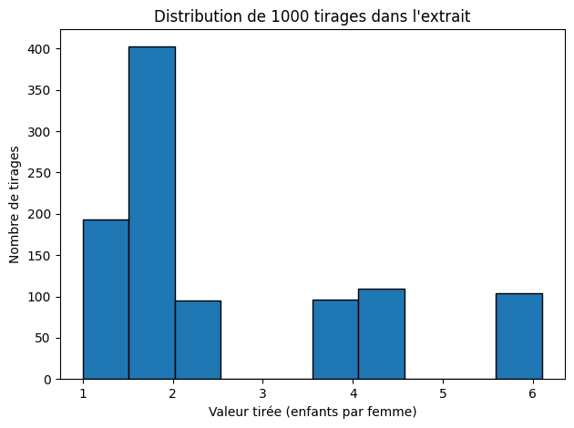
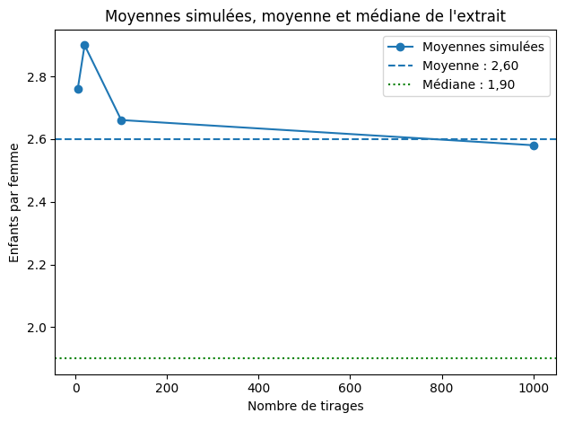

Corrigé TD4
Graphiques et simulation simple à partir d’OWID
Les dix valeurs sont celles de l’énoncé. World est un agrégat déjà inclus avec neuf pays : leur moyenne simple n’est donc pas le taux mondial. Dans le parcours obligatoire, les tirages restent aléatoires ; les résultats affichés correspondent à une exécution, pas à des valeurs à retrouver exactement.
Les exercices se suivent. Utiliser Tab puis Entrée ou Espace pour ouvrir une solution au clavier. Les zones de code peuvent défiler horizontalement.
Les sorties ci-dessous proviennent du code exécuté. Les simulations du TD4 peuvent changer à chaque exécution.
Démarche en pseudo-code 1 — Visualiser puis simuler
# Objectif : observer une distribution puis simuler des tirages
# Entree : liste de taux de fecondite
# 1. Calculer la moyenne observee
# 2. Tracer un graphique en barres
# 3. Tirer au hasard une valeur dans la liste
# 4. Repeter le tirage plusieurs fois
# 5. Calculer la moyenne des tirages
# 6. Observer si la moyenne se stabilise quand n augmenteLes exercices ci-dessous mettent en œuvre ce plan.
Démarche en pseudo-code 2 — Passer des tirages à une courbe
# Objectif : voir si la moyenne simulee se stabilise
# Entree : plusieurs tailles de simulation
# 1. Creer une liste vide pour les moyennes
# 2. Pour chaque taille n :
# faire n tirages
# calculer la moyenne des tirages
# ajouter cette moyenne a la liste
# 3. Tracer tailles en abscisse et moyennes en ordonnee
# Sortie : graphique de stabilisationLes exercices ci-dessous mettent en œuvre ce plan.
Exercice 1 — Créer l'extrait OWID
Objectif. Créer l’extrait et calculer sa moyenne simple.
Afficher la solution : exercice 1
Démarche de résolution
Les valeurs du dictionnaire deviennent une liste ; leur moyenne servira de référence dans la simulation.
Code Python commenté
fertilite = {
"World": 2.3,
"France": 1.8,
"United States": 1.6,
"Japan": 1.2,
"India": 2.0,
"Nigeria": 4.5,
"Niger": 6.1,
"Brazil": 1.6,
"Ethiopia": 3.9,
"China": 1.0
}
valeurs = list(fertilite.values())
moyenne_initiale = sum(valeurs) / len(valeurs)
print("Nombre d'observations :", len(valeurs))
print(f"Moyenne simple : {moyenne_initiale:.2f} enfants par femme")
Résultat et interprétation
10 observations ; 2.60 enfants par femme. La référence World de l’extrait vaut 2.3 : ce sont deux calculs différents.
Sortie de l’exécution de référence :
Nombre d'observations : 10
Moyenne simple : 2.60 enfants par femme
Exercice 2 — Observer clés et valeurs
Objectif. Observer les listes de clés et de valeurs.
Afficher la solution : exercice 2
Démarche de résolution
keys et values suivent le même ordre d’insertion. La tranche [:3] conserve les trois premiers éléments.
Code Python commenté
pays = list(fertilite.keys())
valeurs = list(fertilite.values())
print(pays[:3])
print(valeurs[:3])
print(len(pays) == len(valeurs))
# Chaque barre doit avoir à la fois une étiquette et une hauteur.
Résultat et interprétation
['World', 'France', 'United States'] ; [2.3, 1.8, 1.6] ; True.
Sortie de l’exécution de référence :
['World', 'France', 'United States']
[2.3, 1.8, 1.6]
True
Exercice 3 — Graphique en barres
Objectif. Tracer les taux de fécondité.
Afficher la solution : exercice 3
Démarche de résolution
Utiliser les noms sur l’axe horizontal et les valeurs sur l’axe vertical. Garder le zéro comme origine des barres.
Code Python commenté
import matplotlib.pyplot as plt
plt.figure()
plt.bar(pays, valeurs)
plt.xticks(rotation=45, ha="right")
plt.ylabel("Enfants par femme")
plt.title("Taux de fécondité - extrait OWID")
plt.tight_layout()
plt.savefig("fertilite_barres.png", dpi=300)
plt.show()
plt.close()
Résultat et interprétation
Une figure de dix barres : Niger est la plus haute, China la plus basse. World est une référence agrégée.
Sortie de l’exécution de référence :
Exercice 4 — Modifier un paramètre graphique
Objectif. Modifier le titre et le nom de fichier.
Afficher la solution : exercice 4
Démarche de résolution
Reprendre les mêmes données et les mêmes paramètres graphiques ; changer seulement ces deux éléments.
Code Python commenté
plt.figure()
plt.bar(pays, valeurs)
plt.xticks(rotation=45, ha="right")
plt.ylabel("Enfants par femme")
plt.title("Taux de fécondité - extrait pédagogique arrondi")
plt.tight_layout()
plt.savefig("fertilite_barres_version2.png", dpi=300)
plt.show()
plt.close()
Résultat et interprétation
Les deux fichiers fertilite_barres.png et fertilite_barres_version2.png existent avec les mêmes hauteurs de barres.
Sortie de l’exécution de référence :

Exercice 5 — Interpréter le graphique
Objectif. Interpréter les extrêmes et la lisibilité.
Afficher la solution : exercice 5
Démarche de résolution
Lire les deux barres extrêmes puis expliquer ce que la représentation facilite.
Code Python commenté
# Niger a le taux le plus élevé dans l'extrait : 6,1 enfants par femme.
# China a le taux le plus faible : 1,0 enfant par femme.
# Les hauteurs des barres facilitent la comparaison des niveaux et des écarts,
# à condition de conserver des axes et des unités lisibles.
Résultat et interprétation
Les conclusions portent sur cet extrait arrondi, pas sur l’ensemble des pays.
Exercice 6 — Un tirage aléatoire
Objectif. Tirer une valeur au hasard.
Afficher la solution : exercice 6
Démarche de résolution
random fait partie de Python. choice choisit un élément de la liste ; les valeurs peuvent être tirées à nouveau lors des appels suivants.
Code Python commenté
import random
tirage = random.choice(valeurs)
print("Un tirage :", tirage)
Résultat et interprétation
La valeur appartient à la liste et peut changer à chaque exécution. Deux exécutions peuvent aussi donner le même résultat.
Sortie de l’exécution de référence :
Un tirage : 1.6
Exercice 7 — Prédire le rôle de range
Objectif. Comprendre le nombre de répétitions avec range.
Afficher la solution : exercice 7
Démarche de résolution
range(3) fournit 0, 1 et 2 ; la borne finale 3 est exclue.
Code Python commenté
for i in range(3):
print(i)
for i in range(1):
print("tirage")
# range(20) fournit vingt entiers, de 0 à 19 : vingt tours de boucle.
Résultat et interprétation
Trois lignes (0, 1, 2), puis une ligne tirage.
Sortie de l’exécution de référence :
0
1
2
tirage
Exercice 8 — Moyenne de plusieurs tirages
Objectif. Calculer la moyenne de vingt tirages et corriger une boucle.
Afficher la solution : exercice 8
Démarche de résolution
Ajouter une valeur à la liste à chaque tour puis calculer la moyenne hors de la boucle.
Code Python commenté
tirages = []
for i in range(20):
tirages.append(random.choice(valeurs))
moyenne_tirages = sum(tirages) / len(tirages)
print("Nombre de tirages :", len(tirages))
print(f"Moyenne des tirages : {moyenne_tirages:.3f}")
print(f"Référence de la liste : {moyenne_initiale:.3f}")
# Sans : à la fin de for, Python signale SyntaxError.
# Sans indentation du corps de for, Python signale IndentationError.
Résultat et interprétation
20 tirages ; leur moyenne fluctue autour de 2.60 et peut être au-dessus ou au-dessous. Les deux-points et l’indentation sont obligatoires.
Sortie de l’exécution de référence :
Nombre de tirages : 20
Moyenne des tirages : 2.490
Référence de la liste : 2.600
Exercice 9 — Stabilisation de la moyenne
Objectif. Comparer quatre tailles de simulation.
Afficher la solution : exercice 9
Démarche de résolution
La liste tirages doit être remise à zéro pour chaque taille. Les simulations sont distinctes, et non les préfixes d’un seul tirage de 1000 valeurs.
Code Python commenté
tailles = [5, 20, 100, 1000]
for n in tailles:
tirages = []
for i in range(n):
tirages.append(random.choice(valeurs))
print(f"Pour {n} tirages : moyenne {sum(tirages) / len(tirages):.3f}")
Résultat et interprétation
Quatre moyennes simulées, généralement plus proches de 2.60 aux grandes tailles. La distance ne diminue pas nécessairement à chaque étape.
Sortie de l’exécution de référence :
Pour 5 tirages : moyenne 2.760
Pour 20 tirages : moyenne 2.665
Pour 100 tirages : moyenne 2.450
Pour 1000 tirages : moyenne 2.598
Exercice 10 — Graphique de stabilisation
Objectif. Tracer les moyennes simulées et leur référence.
Afficher la solution : exercice 10
Démarche de résolution
Conserver une moyenne par taille dans une deuxième liste. La ligne horizontale représente la moyenne connue de la liste de départ.
Code Python commenté
tailles = [5, 20, 100, 1000]
moyennes_simulees = []
for n in tailles:
tirages = []
for i in range(n):
tirages.append(random.choice(valeurs))
moyenne_n = sum(tirages) / len(tirages)
moyennes_simulees.append(moyenne_n)
print("Moyennes représentées :", moyennes_simulees)
plt.figure()
plt.plot(tailles, moyennes_simulees, marker="o", label="Simulations")
plt.axhline(moyenne_initiale, linestyle="--", label="Moyenne de l'extrait : 2,60")
plt.xlabel("Nombre de tirages")
plt.ylabel("Moyenne simulée (enfants par femme)")
plt.title("Moyennes de tirages dans l'extrait pédagogique")
plt.legend()
plt.tight_layout()
plt.savefig("simulation_moyenne.png", dpi=300)
plt.show()
plt.close()
Résultat et interprétation
Quatre points et une ligne de référence à 2.60. Cette figure utilise de nouveaux tirages : les moyennes peuvent différer de celles de l’exercice 9.
Sortie de l’exécution de référence :
Moyennes représentées : [2.7600000000000002, 2.9, 2.6609999999999996, 2.5806]

Exercice 11 — Interprétation économique
Objectif. Distinguer simulation et interprétation économique.
Afficher la solution : exercice 11
Démarche de résolution
La simulation reproduit la liste choisie avec le même poids pour chaque position ; elle ne crée pas de nouvelles observations sur la population mondiale.
Code Python commenté
# La moyenne de 2,60 résume les dix valeurs sélectionnées, sans pondération.
# Avec davantage de tirages indépendants, la moyenne fluctue généralement moins
# autour de la moyenne de cette liste, sans rapprochement nécessaire à chaque étape.
# Cette liste mêle un agrégat World et neuf pays, sans poids démographiques :
# la simulation ne mesure donc pas directement le taux mondial de fécondité.
# Changer les pays ou leurs poids change la distribution de départ et sa moyenne.
Résultat et interprétation
La stabilisation concerne ce mécanisme de tirage dans une liste, et non une tendance démographique observée.
Entraînement facultatif
Ces dix questions sont également corrigées. Elles se lisent après le parcours obligatoire, dans l’ordre.
Question facultative 1 — Fixer et répéter une graine.
Objectif. Fixer et répéter une graine.
Afficher la solution : question facultative 1
Démarche de résolution
Replacer la même graine avant deux séries identiques reproduit la même suite dans le même environnement Python. Un seul seed au début n’oblige pas tous les tirages à être identiques.
Code Python commenté
random.seed(123)
serie_a = []
for i in range(5):
serie_a.append(random.choice(valeurs))
random.seed(123)
serie_b = []
for i in range(5):
serie_b.append(random.choice(valeurs))
print(serie_a)
print(serie_b)
print("Séries identiques :", serie_a == serie_b)
Résultat et interprétation
True. La graine est introduite ici, comme dans la progression de l’énoncé.
Sortie de l’exécution de référence :
[2.3, 2.0, 1.8, 6.1, 2.0]
[2.3, 2.0, 1.8, 6.1, 2.0]
Séries identiques : True
Question facultative 2 — Comparer dix moyennes de vingt tirages.
Objectif. Comparer dix moyennes de vingt tirages.
Afficher la solution : question facultative 2
Démarche de résolution
La boucle extérieure représente les simulations ; la boucle intérieure représente les tirages d’une simulation.
Code Python commenté
moyennes_20 = []
for simulation in range(10):
tirages_20 = []
for i in range(20):
tirages_20.append(random.choice(valeurs))
moyennes_20.append(sum(tirages_20) / len(tirages_20))
print(moyennes_20)
Résultat et interprétation
Dix moyennes qui varient autour de 2.60 ; elles ne doivent pas nécessairement être toutes différentes.
Sortie de l’exécution de référence :
[3.275, 2.43, 3.11, 2.9, 2.5949999999999998, 3.3, 3.2449999999999997, 3.225, 3.1100000000000003, 2.46]
Question facultative 3 — Tracer un histogramme de mille tirages.
Objectif. Tracer un histogramme de mille tirages.
Afficher la solution : question facultative 3
Démarche de résolution
Conserver les mille valeurs pour représenter leur distribution, puis compter les observations par classe avec hist.
Code Python commenté
tirages_1000 = []
for i in range(1000):
tirages_1000.append(random.choice(valeurs))
plt.figure()
plt.hist(tirages_1000, bins=10, edgecolor="black")
plt.xlabel("Valeur tirée (enfants par femme)")
plt.ylabel("Nombre de tirages")
plt.title("Distribution de 1000 tirages dans l'extrait")
plt.tight_layout()
plt.savefig("histogramme_tirages.png", dpi=300)
plt.show()
plt.close()
Résultat et interprétation
L’histogramme reflète les valeurs possibles de la liste. Les classes regroupent les tirages ; il ne décrit pas la distribution réelle des populations.
Sortie de l’exécution de référence :

Question facultative 4 — Recalculer la moyenne sans Niger.
Objectif. Recalculer la moyenne sans Niger.
Afficher la solution : question facultative 4
Démarche de résolution
Créer une nouvelle liste en excluant la clé Niger ; préserver les données de la simulation initiale.
Code Python commenté
valeurs_sans_niger = []
for pays_test in fertilite:
if pays_test != "Niger":
valeurs_sans_niger.append(fertilite[pays_test])
moyenne_sans_niger = sum(valeurs_sans_niger) / len(valeurs_sans_niger)
print(f"Sans Niger : {moyenne_sans_niger:.3f} enfants par femme")
Résultat et interprétation
19.9/9 = 2.211… au lieu de 2.600. Retirer une grande valeur abaisse la moyenne.
Sortie de l’exécution de référence :
Sans Niger : 2.211 enfants par femme
Question facultative 5 — Ajouter la médiane à la figure de simulation.
Objectif. Ajouter la médiane à la figure de simulation.
Afficher la solution : question facultative 5
Démarche de résolution
Trier les dix valeurs et faire la moyenne des deux valeurs centrales aux indices 4 et 5.
Code Python commenté
valeurs_triees = sorted(valeurs)
mediane_initiale = (valeurs_triees[4] + valeurs_triees[5]) / 2
print("Médiane de l'extrait :", mediane_initiale)
plt.figure()
plt.plot(tailles, moyennes_simulees, marker="o", label="Moyennes simulées")
plt.axhline(moyenne_initiale, linestyle="--", label="Moyenne : 2,60")
plt.axhline(mediane_initiale, color="green", linestyle=":", label="Médiane : 1,90")
plt.xlabel("Nombre de tirages")
plt.ylabel("Enfants par femme")
plt.title("Moyennes simulées, moyenne et médiane de l'extrait")
plt.legend()
plt.tight_layout()
plt.savefig("simulation_mediane.png", dpi=300)
plt.show()
plt.close()
Résultat et interprétation
Médiane 1.9. La moyenne simulée tend vers la moyenne 2.6, pas vers la médiane : la ligne verte est une autre statistique de référence.
Sortie de l’exécution de référence :
Médiane de l'extrait : 1.9

Question facultative 6 — Créer une fonction moyenne_tirages(n).
Objectif. Créer une fonction moyenne_tirages(n).
Afficher la solution : question facultative 6
Démarche de résolution
Initialiser la liste à l’intérieur de la fonction pour que chaque appel crée une nouvelle simulation. n doit être un entier strictement positif.
Code Python commenté
def moyenne_tirages(n):
valeurs_tirees = []
for i in range(n):
valeurs_tirees.append(random.choice(valeurs))
return sum(valeurs_tirees) / len(valeurs_tirees)
print("Moyenne de 20 tirages :", moyenne_tirages(20))
Résultat et interprétation
Une moyenne aléatoire de vingt valeurs ; n = 0 provoquerait une division par zéro.
Sortie de l’exécution de référence :
Moyenne de 20 tirages : 2.1399999999999997
Question facultative 7 — Tester de nouvelles tailles.
Objectif. Tester de nouvelles tailles.
Afficher la solution : question facultative 7
Démarche de résolution
Réutiliser la fonction précédente sans changer le mécanisme de tirage.
Code Python commenté
tailles_extension = [10, 50, 500, 5000]
moyennes_extension = []
for n in tailles_extension:
moyenne_n = moyenne_tirages(n)
moyennes_extension.append(moyenne_n)
print(n, moyenne_n)
Résultat et interprétation
Quatre nouvelles moyennes. Les grandes tailles réduisent généralement les fluctuations.
Sortie de l’exécution de référence :
10 2.66
50 2.7539999999999996
500 2.5008000000000004
5000 2.5528
Question facultative 8 — Mesurer la distance à la moyenne initiale.
Objectif. Mesurer la distance à la moyenne initiale.
Afficher la solution : question facultative 8
Démarche de résolution
L’écart signé indique le côté de la référence ; abs donne une distance positive. Reprendre les simulations conservées, sans effectuer un nouveau tirage.
Code Python commenté
for i in range(len(tailles_extension)):
ecart = moyennes_extension[i] - moyenne_initiale
print(f"n={tailles_extension[i]} : écart {ecart:.4f}, distance {abs(ecart):.4f}")
Résultat et interprétation
Un écart positif signifie une moyenne simulée supérieure à 2.60 ; un écart négatif signifie l’inverse.
Sortie de l’exécution de référence :
n=10 : écart 0.0600, distance 0.0600
n=50 : écart 0.1540, distance 0.1540
n=500 : écart -0.0992, distance 0.0992
n=5000 : écart -0.0472, distance 0.0472
Question facultative 9 — Expliquer intuitivement la stabilisation.
Objectif. Expliquer intuitivement la stabilisation.
Afficher la solution : question facultative 9
Démarche de résolution
Les écarts des tirages se compensent davantage lorsqu’ils sont nombreux.
Code Python commenté
# Stabiliser signifie que la moyenne des tirages se concentre davantage
# autour de la moyenne de la liste quand le nombre de tirages augmente.
# Cela ne garantit ni l'égalité exacte, ni une distance décroissante à chaque n.
Résultat et interprétation
La loi des grands nombres concerne des répétitions selon le même mécanisme ; elle ne corrige pas une sélection de pays non représentative.
Question facultative 10 — Construire l’intervalle avancé demandé.
Objectif. Construire l’intervalle avancé demandé.
Afficher la solution : question facultative 10
Démarche de résolution
L’énoncé donne la forme moyenne ± 2 × écart-type / racine(n), sans préciser l’écart-type. On utilise ici celui de la distribution de tirage connue : dix positions équiprobables, division par 10. L’intervalle est une approximation pour la moyenne de ce mécanisme.
Code Python commenté
somme_carres = 0
for valeur in valeurs:
somme_carres = somme_carres + (valeur - moyenne_initiale) ** 2
ecart_type = (somme_carres / len(valeurs)) ** 0.5
n_intervalle = len(tirages_1000)
moyenne_intervalle = sum(tirages_1000) / n_intervalle
marge = 2 * ecart_type / n_intervalle ** 0.5
borne_basse = moyenne_intervalle - marge
borne_haute = moyenne_intervalle + marge
print(f"Intervalle approximatif : [{borne_basse:.3f} ; {borne_haute:.3f}]")
print(f"Marge : {marge:.3f} enfants par femme")
Résultat et interprétation
Pour 1000 tirages, la marge vaut environ 0.100. Sous l’approximation normale, le facteur 2 correspond à une couverture proche de 95 %, sans garantie pour chaque simulation. Ce n’est pas un intervalle pour le taux mondial.
Sortie de l’exécution de référence :
Intervalle approximatif : [2.531 ; 2.732]
Marge : 0.100 enfants par femme
Sources et fichiers de référence
Les extraits des TD1 à TD4 sont ceux des énoncés. Les CSV complémentaires sont des copies des fichiers du dépôt, dont la date de téléchargement initial n’est pas documentée. Consulter les sources et empreintes SHA-256 des CSV.